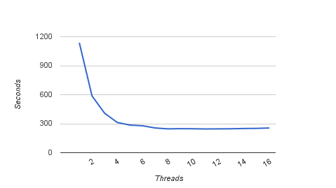

Hello! My name is Pavel Bahilov and this is my
CS488 Project
For my first objective I added some cool primitives.
I started with the basics: a cone, a cylinder, and a torus.

Next I thought it would be interesting to flex my math muscle and draw a couple of implicitly defined quartic surfaces.
Here is a surface that was discovered by Leon Lampret.

This next one was divined by Edouard Goursat and bares his name.
A Goursat Surface is defined by three parameters. In this picture the triplets from left to right are (0.984182, -0.974414, 0.152661), (0, -1, 0.5), and (0.0879882, -0.389485, -0.231945).

For my second objective I added adaptive super-sampling.
The idea is to set a threshold on the standard deviation between the sampled colours. When the deviation is too great the pixel is deemed under-sampled and more samples are generated.
In this image the under-sampled pixels are marked as white.

For my third objective I made two shadow improvements.
First, I extended the basic point-light sources to a spherical ones producing soft shadows.

Second, I added ambient occlusion to improve shading, most notably in areas that are only illuminated by ambient light.
This picture was rendered without ambient light. The entire left side of the Stanford dragon is missing definition.

Turning on ambient occlusion leads to a much more realistic image. Stunning!

For my fourth objective I added space partitioning.
I divided the scene into uniform voxels and used a novel idea from the 2008 paper by Ares Lagae & Philip Dutre titled "Compact, Fast and Robust Grids for Ray Tracing" to efficiently store the voxel data.
To traverse the grid I used the 3D Digital Differential Analyzer algorithm.
This picture shows an 11x11 grid of Stanford dragons. The scene is composed of 12.1M polygons.

For my fifth objective I added multi-threading.
The model that I used was to have some number of workers and one foreman. Each worker comes to the foreman to drop off the work it had completed and on the way back picks up more work if there is any. Using this approach means no threads are idling unless the picture is almost done rendering.
Surprisingly the only special consideration I had to make was to implement a thread-safe pseudo-random number generator. Although, having multi-threading prevented me from adding some other optimization techniques such as mailboxing and shadow caching.
Here is a diagram showing the number of threads used vs time taken when generating the above 12.1M polygon image on my 4ghz quad-core (8 hyperthreaded) Core i7 CPU.
{kind=link}
For my sixth objective I added refractive materials.
This scene shows two perfectly specular refractive spheres.

But wait, there's more! Perfectly specular refractions look boring, plus one of my project goals was to simulate ice, so I added diffuse refractions.

For my seventh objective I extended the reflective material I introduced in assignment 4 to include diffuse reflections.
This picture is one of my favorites. I was blown away when I first saw it.

For my eighth objective I added two types of solid textures.
A checkered texture:

And a veiny marble-like texture:

For my ninth objective I added depth of field.
I did this by using a non-zero aperture radius of the virtual camera. Now we can specify the f-stop (shutter speed) of the camera to achieve more realistic results.
Here is a series of photos showing the effect in action.


For my tenth objective I created a unique scene.
For the past two weeks I could to little else besides my project. After over a hundred hours spent I can truly say this has been an amazing experience; one that I will not soon forget.
Looks like there is nothing left but to show you the ultimate fruit of my labor. I present to you
my final scene...
{kind=link}